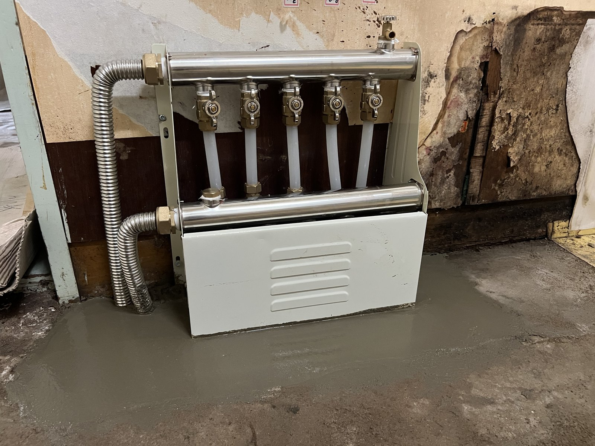
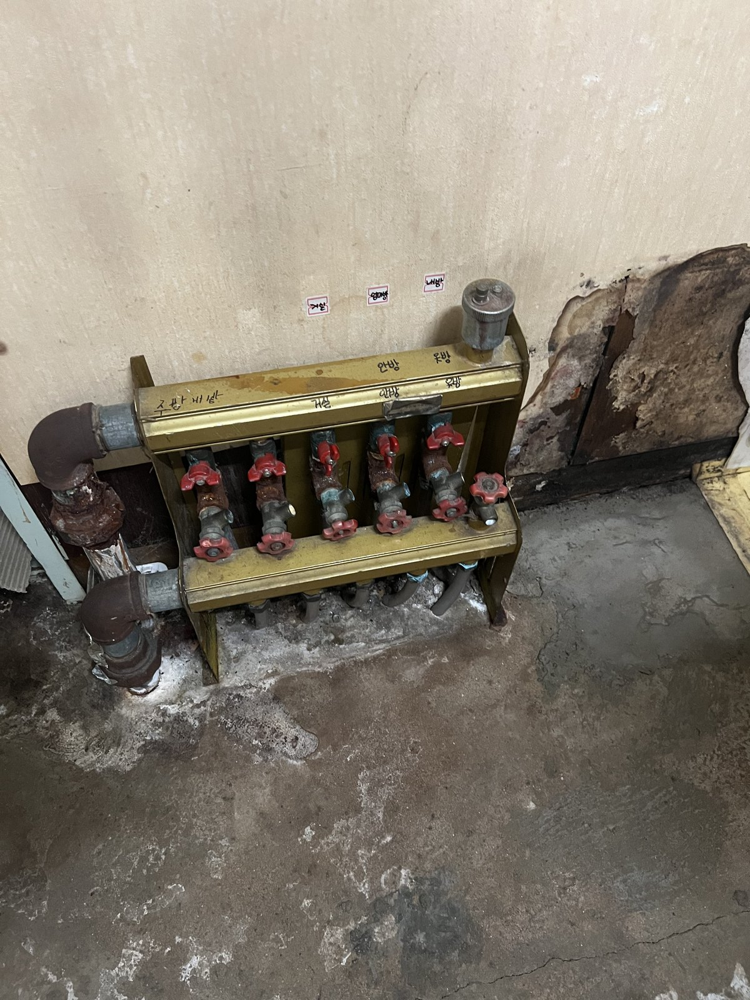
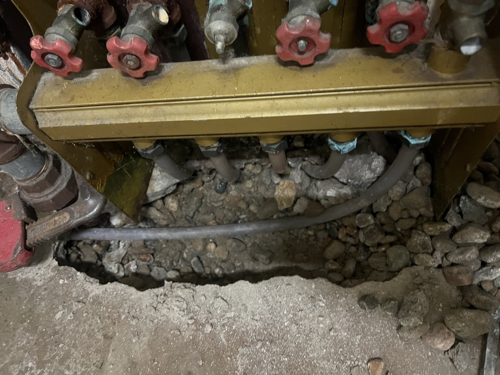
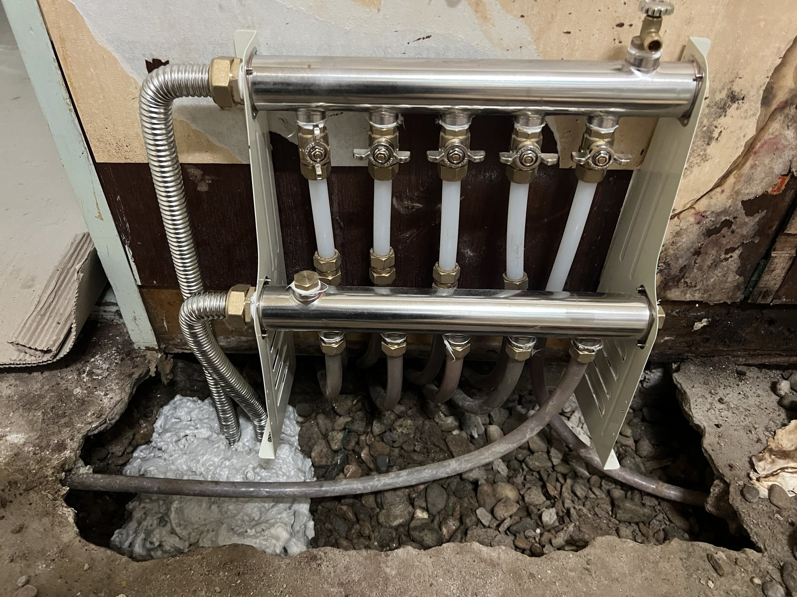

대전 난방 분배기 교체｜충무로 현장 설치 전후와 바닥 보수

현장 작업 한눈에 보기
- 현장
- 충무로 인근 · 분배기 설치
- 문제
- 기존 분배기·하부 연결부 확인
- 작업
- 새 분배기 설치·배관 연결
하부 덮개 설치·바닥 보수 - 결과
- 설치·바닥 보수 사진 확인
정확한 고장 원인·압력시험 미확인
대전 충무로 인근 현장의 기존 분배기 확인부터 새 분배기·배관 연결, 하부 덮개 설치와 바닥 보수까지 소개합니다. 교체 전·설치 중·주변 보수 후를 실제 사진 4장으로 비교할 수 있습니다.
기존 분배기와 하부 배관부터 확인했습니다
대전 충무로 인근 현장에서 난방 분배기를 교체했습니다. 기존 상태부터 새 분배기 설치, 하부 덮개와 바닥 보수까지 실제 작업 순서대로 소개합니다.
2026년 9월 30일 첫 사진에는 기존 분배기와 개방된 하부 바닥이 보입니다. 이번 작업은 본체만 보여주는 사례가 아니라, 배관 연결과 주변 바닥 보수까지 포함한 공정입니다.
같은 현장에서 진행한 방별 녹물 배출은 별도 사례로 연결했습니다. 분배기 교체와 배관 청소의 범위를 나누어 보실 수 있습니다.

교체 전 밸브와 하부 연결부 상태
기존 분배기의 밸브와 하부 연결 부속을 가까이 보면 변색과 침착 흔적, 바닥 아래로 이어지는 배관이 보입니다. 전체 모습과 함께 비교하면 교체 전 연결 위치를 이해하기 쉽습니다.
이 흔적만으로 특정 누수 원인을 확정할 수는 없습니다. 분배기 교체 상담 시에는 본체뿐 아니라 하부 연결부와 주변 작업 공간도 함께 확인할 수 있도록 사진을 준비해 주세요.

새 분배기와 배관 연결 — 바닥 보수 전
새 분배기 본체와 개별 밸브, 연결 배관, 측면 금속 주름관을 설치한 단계입니다. 앞선 기존 분배기 사진과 비교하면 바뀐 본체와 연결 위치를 볼 수 있습니다.
아직 하부 덮개와 바닥 보수를 하기 전이라 아래쪽 연결부가 드러나 있습니다. 다음 마무리 사진과 구분해 보시면 어떤 부분이 보수 후 가려지는지 알 수 있습니다.
제품의 정확한 제조사·등급과 압력시험 결과는 이번 자료에서 확인되지 않았습니다.

하부 덮개 설치와 개방한 바닥 보수
하부 덮개를 설치하고 개방했던 바닥을 보수한 모습입니다. 이번에 소개하는 시공 범위는 기존 분배기 확인, 새 분배기와 배관 연결, 하부 덮개 설치와 바닥 보수까지입니다. 벽면 전체를 새로 마감한 사례는 아닙니다.
견적 상담에서는 분배기 교체와 함께 어떤 연결 부속을 손보고, 주변 복구를 어디까지 진행할지 구분해 확인하는 것이 좋습니다. 아래 상담 안내에서 준비할 사진과 포함 범위를 확인해 주세요.
사용 중 젖은 흔적이 보이면 직접 부속을 조이기보다 전체 모습과 해당 위치를 남겨 점검을 요청해 주세요. 같은 현장의 난방배관 청소는 관련 사례에서 이어 보실 수 있습니다.